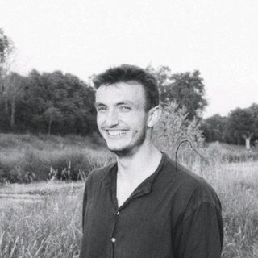

Bewerbung eingereicht: Hallo, ForestVerse!Application submitted: hello, ForestVerse!
Heute haben wir ForestVerse beim Hochschulwettbewerb 2027 eingereicht. Zeit, uns und unsere Idee kurz vorzustellen.
Today we submitted ForestVerse to the Hochschulwettbewerb 2027. Time to briefly introduce ourselves and our idea.
Unsere IdeeOur idea
„Wir schützen nur, was wir lieben!“ Wie wahr. Doch viele der faszinierendsten Wälder der Erde wird kaum jemand je betreten können. Wir wollen Satellitendaten mit der weltweit größten Sammlung an 3D-Laserscans von Wäldern auf 3Dtrees.earth verbinden und daraus ein Modell trainieren, das die Struktur aller Wälder der Welt simulieren kann. Ein Klick auf die Weltkarte, und man erlebt den Wald in Virtual Reality, mit nur einem Smartphone und einer einfachen Cardboard-Brille.
“We only protect what we love!” True that. Yet hardly anyone will ever set foot in many of the most fascinating forests on Earth. We want to combine satellite data with the world’s largest collection of 3D laser scans of forests on 3Dtrees.earth and train a model that can simulate the structure of every forest in the world. One click on the world map, and you experience the forest in virtual reality, with nothing but a smartphone and a simple cardboard headset.
Wer wir sindWho we are

Kilian Gerberding
Er promoviert an der Universität Freiburg zu 3D-Laserscanning von Wäldern und entwickelt die offene Forschungsplattform 3Dtrees.earth mit, auf der Forschende weltweit ihre Waldscans analysieren und teilen. In ForestVerse kümmert er sich um die Daten, das Modell und die VR-Wälder.
He is doing his PhD on 3D laser scanning of forests at the University of Freiburg and co-develops the open research platform 3Dtrees.earth, where researchers worldwide analyze and share their forest scans. In ForestVerse he takes care of the data, the model and the VR forests.
Marina Meyer
Marina studiert im Master Bildungswissenschaften und bringt so die Bildungsperspektive ein. Sie wird gestalten, wie Jugendliche in Schulen, Universitäten und Freiwilligendiensten die Wälder der Welt kennenlernen, den Weg der Daten nachvollziehen und mit der VR-Brille selbst eintauchen.
Marina is doing her master’s in educational science and brings the education perspective. She will shape how young people in schools, universities and voluntary services get to know the world’s forests, follow the path of the data and dive in themselves with the VR headset.
Betreut wird das Projekt von Prof. Dr. Teja Kattenborn. Mehr über uns steht unter, ihr ahnt es schon, Über uns.
The project is supervised by Prof. Dr. Teja Kattenborn. More about us under – you guessed it – About us.
Wie es weitergehtWhat happens next
Jetzt ist die Jury am Zug. Wir freuen uns darauf, von ihr zu hören, und berichten hier, sobald es Neuigkeiten gibt.
Now it is the jury’s turn. We are looking forward to hearing from them and will post here as soon as there is news.